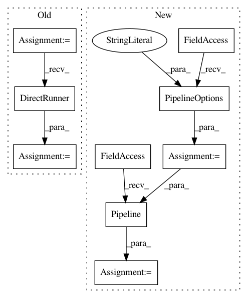

0e57630cea86d426a9348e8f6a9dd3a7d78b282e,research/object_detection/dataset_tools/context_rcnn/add_context_to_examples_tf1_test.py,GenerateContextDataTest,test_beam_pipeline,#GenerateContextDataTest#,328
Before Change
with InMemoryTFRecord(
[self._create_first_tf_example(),
self._create_second_tf_example()]) as input_tfrecord:
runner = runners.DirectRunner()
temp_dir = tempfile.mkdtemp(dir=os.environ.get("TEST_TMPDIR"))
output_tfrecord = os.path.join(temp_dir, "output_tfrecord")
sequence_key = six.ensure_binary("image/seq_id")
max_num_elements = 10
After Change
sequence_key = six.ensure_binary("image/seq_id")
max_num_elements = 10
num_shards = 1
pipeline_options = beam.options.pipeline_options.PipelineOptions(
runner="DirectRunner")
p = beam.Pipeline(options=pipeline_options)
add_context_to_examples.construct_pipeline(
p,
input_tfrecord,
output_tfrecord,
In pattern: SUPERPATTERN
Frequency: 3
Non-data size: 9
Instances
Project Name: tensorflow/models
Commit Name: 0e57630cea86d426a9348e8f6a9dd3a7d78b282e
Time: 2020-06-30
Author: rathodv@google.com
File Name: research/object_detection/dataset_tools/context_rcnn/add_context_to_examples_tf1_test.py
Class Name: GenerateContextDataTest
Method Name: test_beam_pipeline
Project Name: tensorflow/models
Commit Name: 0e57630cea86d426a9348e8f6a9dd3a7d78b282e
Time: 2020-06-30
Author: rathodv@google.com
File Name: research/object_detection/dataset_tools/context_rcnn/generate_embedding_data_tf1_test.py
Class Name: GenerateEmbeddingData
Method Name: test_beam_pipeline
Project Name: tensorflow/models
Commit Name: 0e57630cea86d426a9348e8f6a9dd3a7d78b282e
Time: 2020-06-30
Author: rathodv@google.com
File Name: research/object_detection/dataset_tools/context_rcnn/add_context_to_examples_tf1_test.py
Class Name: GenerateContextDataTest
Method Name: test_beam_pipeline_sequence_example